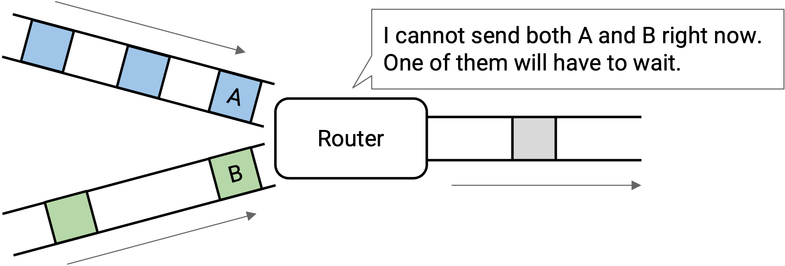
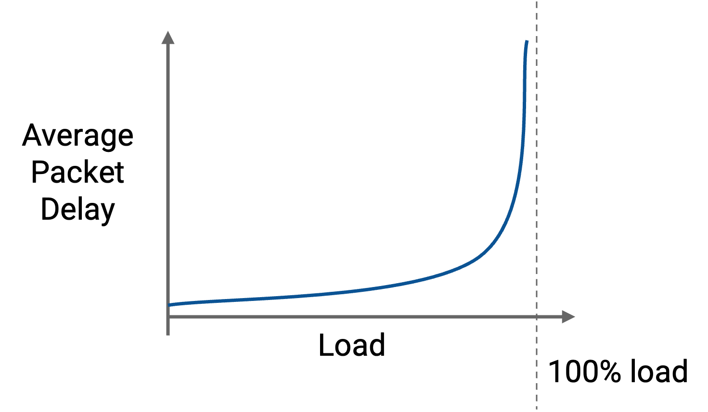
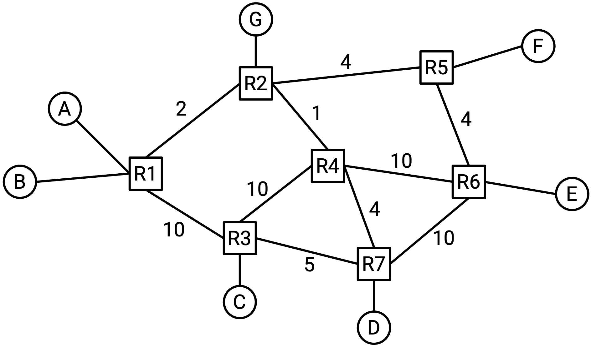
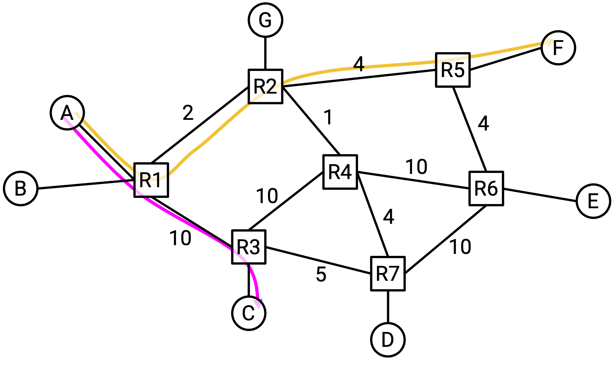
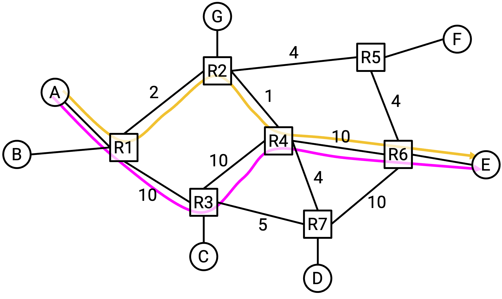
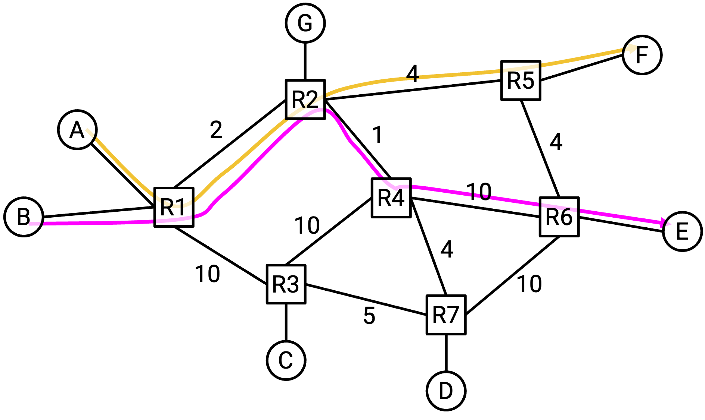
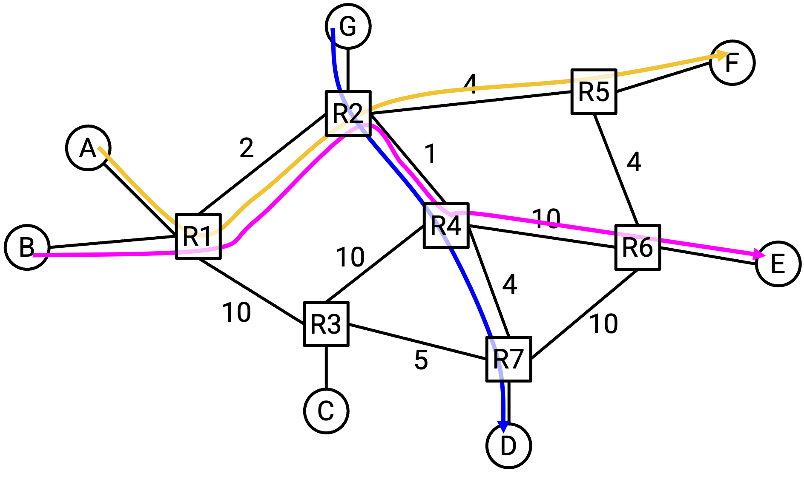
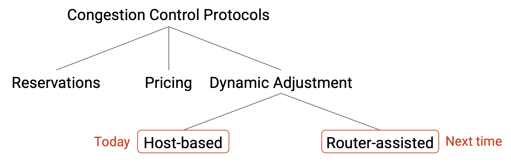

Congestion Control Principles
Congestion is Harmful
Recall that if many packets arrive at a router at the same time (e.g. bursty traffic), and the router needs to send both packets over the same link, then the router will send one packet and put the other packets in a queue (to be sent later).

More generally, if the input rate of packets exceeds the output rate that the link can sustain, the router will be unable to keep up with the pace of incoming packets. This router is congested, and needs to keep packets in a queue while they wait their turn to be sent. The queue can cause packets to be delayed. If the queue itself gets too full and packets are still incoming, then packets can get dropped.

This graph shows the performance of a queueing system with bursty arrivals. The dotted line represents the link’s capacity (maximum load). As we increase the load, packets get more delayed.
When arrivals are bursty, we can’t realistically use the maximum capacity of the link. We have to find an appropriate performance trade-off between load and packet delay.
Notice that the graph starts sloping upwards even before we reach the dotted line. This means that the queueing is already delaying packets, even if nothing is dropped. By the time we reach maximum utilization and start losing packets, we are already incurring very large packet delays from the queue.
Brief History of Congestion
In the 1980s, TCP did not implement any congestion control. The sending rate was only limited by flow control (recipient buffer capacity).
If packets were dropped, the sender would re-send copies of the packet repeatedly, at the same fast rate, until the packet arrived. A smarter approach would be to slow down to avoid packets being dropped and reduce the copies clogging up the network, but early TCP implementations did not do this.
In October 1986, the Internet started to suffer from a series of congestion collapses, where the capacity of the Internet significantly decreased. One link between UC Berkeley to Lawrence Berkeley Lab (two sites roughly 400 yards away) had its throughput drop from 32 Kbps = 32,000 bps to 40 bps.
Michael Karels (UC Berkeley undergraduate) and Van Jacobson (Lawrence Berkeley Lab researcher) were working on the networking stack in the Berkeley Unix system (influential early operating system), and they realized that the network had thousands of copies of the same packet, because everybody was trying to re-send packets that were being dropped.
Karels and Jacobson developed an algorithm for fixing the problem, which evolved into the modern TCP congestion control algorithm. Their fix was a modification to TCP itself, where the window size (which dictates the rate of sending packets) is dynamically adjusted in response to packet loss.
Because their solution was a modification to the logic of TCP (recall, TCP is implemented in the operating system), no upgrades to routers or applications were needed.
TCP congestion control is one of many examples of Internet design being ad-hoc. Karels and Jacobson’s patch was only several lines of extra code in the BSD operating system’s implementation of TCP. The patch worked, so it was quickly adopted. Since then, the topic of congestion control has been extensively researched and several improvements have been made, but ultimately, the core ideas in the original patch persist to this day. The Internet has not had a congestion collapse since then, so the original fix has withstood the test of time.
Why is Congestion Control Hard?
To get a sense of why congestion control is a difficult problem, consider the following network graph. At what rate should host A send traffic?

It depends on the destination, so A can’t just come up with one fixed rate for all destinations. For example, if A is communicating with C, then A could send packets at 10 Gbps.
What if A is communicating with F instead? The bottleneck link (least capacity) along this path is 2Gbps, so A should probably send packets at 2 Gbps.

What if A is communicating with E?
It depends on what path the traffic is taking between A and E. If the traffic is taking the bottom path through R3, then A could send packets at 10 Gbps. But if the traffic is taking the top path through R2, then A can now only send packets at 1 Gbps.

One takeaway so far is that our congestion control algorithm will need to somehow learn about the bandwidths and bottlenecks along the path that the packet is taking.
Also, recall that the network graph changes over time as new links are added or links go down. This means that it’s not enough to learn about paths a single time. Our algorithm will need to be adaptive to changes in network topology.
So far, we’ve assumed that A is the only host sending traffic on the network, and A can use the full capacity of every link. But what if other connections are also using bandwidth?

In this example, A and F have a connection, and B and E have a connection. The two connections seem like they should be totally separate (different senders, different recipients), but in fact, their paths share a link in the network.
If we want the two connections to share the capacity on this link fairly, maybe A and B should each send at 1 Gbps.
What if a new connection starts between G and D? Should A change its rate of 1 Gbps? (No formal algorithm yet, just think about using bandwidth in a way that seems reasonable.)

First, notice that the G-D and B-E connections are sharing a link. This means that these two connections have to slow their rate down to 0.5 Gbps.
Now, if we look back at the 2 Gbps link that A-F and B-E had in common, B-E is only using 0.5 Gbps on this link. This means that A could increase its rate to 1.5 Gbps.
What happened here? The G-D connection was created, and its path has no links in common with the A-F connection. And yet, this seemingly unrelated connection caused the A-F connection’s rate to increase. Connections can indirectly affect other connections, even if those two connections don’t share any links in common!
In summary: When the sender is trying to determine a rate for sending packets, it has to consider: The destination, the path to that destination, the connections sharing links along that path, and the connections sharing links with those connections (indirect competition), and so on. Congestion control is a hard problem because all the connections in the network are dependent on each other to determine their optimal sending rate.
More fundamentally, congestion control is a resource allocation problem. Bandwidth is a limited resource, each connection wants a certain amount of that resource, and we need to decide how much bandwidth to allocate to each connection.
Resource allocation is a classic problem in computer science. (Examples include CPU scheduling and memory allocation algorithms.) However, unlike some resource allocation problems, a change in one connection’s allocation can have a global impact across all other connections. Also, allocations have to change every time a connection is created or destroyed. As a result, congestion control is more complex than the traditional resource allocation problem, and in fact, we don’t even have a formal model to define the problem.
Unlike a traditional resource allocation problem, where the algorithm knows about the resource (e.g. CPU time) and the jobs (e.g. processes) ahead of time, there is no global mastermind that can see the entire network to allocate resources. Our solution has to be decentralized, where every sender decides its own allocation (even though everyone’s decisions are highly inter-dependent).
Goals for a Good Congestion Control Algorithm
From a resource allocation perspective, there are three goals we want out of a good congestion control algorithm.
We’d like the resource allocation to be efficient. Links should not be overloaded, and there should be minimal packet delay and loss. Also, links should be utilized as much as possible.
We’d also like the resource allocation to be fair between connections. We’ll formalize the definition of fair later, but roughly speaking, every connection should share an equal portion of the available capacity.
We want a solution that achieves a good trade-off between these goals. It would be possible to optimize one goal at the expense of the others, but that leads to bad solutions. For example, we could ensure maximal link utilization by having everyone send packets extremely quickly (bad solution, causes congestion). Or, we could ensure minimal packet loss by making everybody send packets extremely slowly (bad solution, not utilizing capacity).
From a more practical systems perspective, the solution we come up with needs to be scalable and decentralized. Our solution should also be able to adapt to changes in the network (e.g. changing topology, connections being created and destroyed).
Design Space of Solutions
As we saw earlier, Karels and Jacobson fixed TCP congestion control by patching the TCP implementation in the operating system. But, if we could go back and re-design the Internet from scratch, what other possible designs for congestion control exist?
One possible alternate design is based on reservations. The sender could request bandwidth ahead of time, and then free up that bandwidth after the connection is over. As discussed earlier, maintaining a reservation across the entire network comes with many technical difficulties. This approach is also problematic because it assumes that the sender knows what bandwidth it needs ahead of time, which isn’t necessarily true.
Another alternate design is based on pricing. As an analogy, consider express toll lanes on the highway (dedicated lanes only available to drivers who pay). The price to use the express toll lane depends on how congested the highway is. When the highway has very few cars, using the toll lane is very cheap, and when there is heavy traffic, using the toll lane is more expensive. Another form of congestion pricing occurs in airplane tickets, which cost more during busier times (e.g. holidays).
To apply congestion pricing to the Internet, your ISP could add a button in your web browser that enables higher Internet speeds for an extra fee, and the fee could change depending on how congested the Internet is. Then, routers can prioritize sending packets from users who are paying more, and drop packets from users who are not paying. Research exists on congestion pricing on the Internet, and economists sometimes claim that if bandwidth is a scarce commodity, then a market structure will lead to an optimal solution. Congestion pricing has not been widely deployed, because it requires some form of business model connecting payments to congestion.
All modern congestion control algorithms (including the ones we’ll study) are based on dynamic adjustment. Hosts dynamically learn the current level of congestion, and adjust their sending rate accordingly. In practice, dynamic adjustment is a practical solution because it can be easily generalized. This approach doesn’t assume any business model (needed for pricing), and doesn’t assume anything about users knowing the bandwidth they need ahead of time (needed for reservations).
Dynamic adjustment does require good citizenship. TCP needs everybody on the network to work together to share the resources fairly. For example, when a new connection starts using links, other connections need to slow down and share the bandwidth.
Within the dynamic adjustment approach, there are two broad classes of solutions. In host-based congestion control algorithms, the sender is monitoring the performance and adjusting its rate accordingly. These algorithms are implemented entirely at the sender, and there is no special support from routers. The modification to TCP is a host-based algorithm, and is widely deployed today.
In router-assisted congested control algorithms, routers will explicitly send information about congestion back to the sender, to help the sender adjust its rate. Congestion happens at routers, so routers are in a good position to offer information about congestion. Router-assisted algorithms have been deployed in recent years, especially in datacenters.
Some router-assisted algorithms send very little information, e.g. a single bit indicating congestion, while other algorithms send more detailed information, e.g. the exact rate the sender should use.
Note that in both cases, routers are signaling congestion back to the sender. In router-assisted algorithms, the router is explicitly sending a message about its level of congestion. By contrast, in host-based algorithms, the sender does not receive explicit feedback from the routers. Instead, the sender uses implicit clues from the router (e.g. packets getting dropped or delayed) to deduce that the router is congested.

In this taxonomy of congestion control approaches, we’ll focus on the dynamic adjustment approach, and within the space of dynamic adjustment solutions, we’ll focus on host-based solutions.